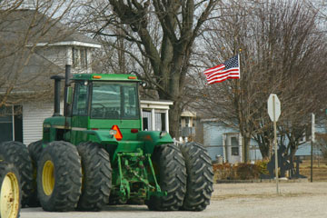
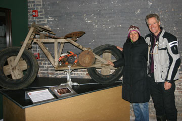
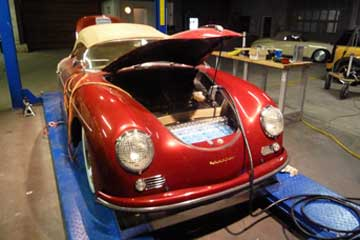
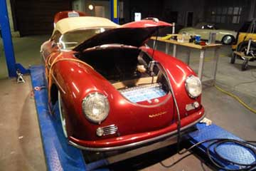

A whole day at the Detroit Auto Show. In the morning we let a number of people take Green Car on a little test-drive on the track in the basement. Upstairs in the big hall all the major auto-manufacturers exhibited electric car and hybrids. They were the big news this year and some of the cars are already on the market. The cars shined in the lamplight and looked wonderful and seductive in their gloss and shiny leather. One of Hjalte´s favorites was the new electric Ford Focus while I was more inclined to go for the new Tesla. BYD, Mercedes, Smart, Honda, Audi, VW and many more were on the move with electric cars. All things considered Green Car is still up in front with long range, good space and convenience. And actually driven kilometers! The early adapters among the car-buyers are now catching on, while the majority still waits for mass-production to improve batteries and bring down the price of EVs. It is very important that many different electric cars get on the market and on the roads. The long and necessary evolution and perfection of the electric car needs the experiences from thousands and millions of drivers.
Nina and Hjalte


Bruce and Linda drove with us the 40 miles into Detroit in their hybrid Ford-Ranger. The Auto Show opened the doors for Green Car. The giant exhibition was to open next day and workers were busy with last minute preparations. Again this year the exiting news were electric. Nearly all the big automakers presented electric cars from super sports cars to Minis. One of the most attractive was the new Tesla, its shining body floating over the floor and the tough electric drivetrain. On the way home we saw more of Detroit, one of the US cities worst hit by decay and unemployment. Ruins and empty lots encircling a small core of skyscrapers. In the morning Bruce, a retired Ford-man responsible for buildings and environment, had been on a panel about new green jobs for Michigan. But we are very late, he said. Linda had been working at the University library in Ann Arbor outside Detroit. Bruce and Linda took us to a nice micro-brewery and restaurant in Ann Arbor, a very relaxed town full of students and pedestrians.
Nina og Hjalte


In pure frost og bright sun I, Green Car, drive the last miles to Detroit, the Motor City. Happy and proud I pause in front of the gates to the North American International Auto Show - I made it all the long way round on time. Skyscraper high billboards advertise the new models. I'm taken inside and parked right between all the new electric cars in the Michigan Hall in the enormous COBO-center. Hectic activity, workers, electricians, producers. A man polishes me, a charge-point is attached and tomorrow I will take journalists on a test drive on the electric test track here on the lower floor.
Many greetings from Green Car


In the morning everything was covered by a thick layer of snow, blinking and sparkling in -9 C. We left Waterloo equipped with hot coffee and an ice-cleaner. Soon we could tell that Green Car was driving OK, but not much more than 1,2 km / % charge, so we had a lunch-charge at a RV-repair shop in Coldwater. We then drove on, still without heat in the car to make it to Saline on the old Chicago-road towards Detroit. In Saline Linda from the Electro Auto Ass. had seen Green Car moving closer on our web-site, so she was out on the street as we turned around the corner and greeted us! Her husband Bruce got home and at once put Green Car to charge in their garage. We came into an old wooden house with a warm fireplace. Wonderful! An hour later we drove a few blocks into town and had a fine diner with the Electric people. Some had hybrids or self-made electric conversions and a man even had a running electric car from 1916!
Nina


Snow was in the air over Peru. We called from the car on our indispensable satellite-phone and made sure there was a room for us at a hotel we had found on the net. But when we arrived at the address in Waterloo late in the afternoon the name had changed to Maple Leaf Bed and Breakfast. And nobody was at home. We called again and found the surprised hosts promising to be home in an hour. We buttoned up our coats and went for a walk in the little town. At the railroad crossing the trains blasted by in the whirling snow with long, sad whistles. On the main street people found refuge from the weather in the local bar. We returned to the house and now the hosts had come home. We had ended up in another town - luckily - because the house was a fairytale of old things and they let us wire in Green Car to their pool-heater. The house was still full of Santas and fancy Christmas-trees in every room.
Nina and Hjalte


There were no RV-parks nearby. While we thawed in a coffee-bar I searched the net. Indianapolis State Fair should have hook-ups. If we had not called we would have thought all was closed when we came there. But on the deserted parking lot there were actually live 220V outlets. Snow began to fall while we charged. On the vast fair-grounds we saw the trotting track and in the old stables we met Dan Statler and his great race-horses. We also saw icehockey-training. When we rolled up the cord it froze 6 degrees C and the freeway going north had been closed. In the town of Peru we had to stop and found a small Veteran-owned motel. I disconnected the heater and got Green Car hooked up to only 220 V. Nina and I crawled deep down in our sleeping bags.
Hjalte

The farms in Indiana seem to be in better shape than down South. White-painted wooden houses, hundred years old, full of spires, verandas and porches line the main street in the small towns we pass through. It gets dark early and we move through an invisible landscape of shadows and distant lights. We listen to ghost-stories on the CD-player and it takes some time before we notice the flashing blue lights that keep trailing us. I stop the car and Nina jumps out. A police officer walks up to the car and scans inside with his torch light. Passers-by have called the police because we were driving slowly and he wants to check whether we are intoxicated. Electric car? Save power? Then he understands and wish us safe travels!
Hjalte

Teresa gave us a whirl-wind tour through St Louis. The city hosted the World Fair in 1904, 106 years before Shanghai. At that time the automobile was a great novelty. We visited a beautiful glass-building with palms that has been preserved from 1904, now used for weddings. Eero Sarinen's gigantic arch at the Mississippi made a huge impact on us. Bold and clear. Testimony to optimistic and proud times. At the MOTO-museum we saw a great collection of rare motorcycles including the world's only wooden MC! Before we continued we tried Teresa and Mark's Tesla electric sports car. Don't be shy, Teresa said, the pedal to the metal! Stunning! 200 KW do pull forward! Then we had to say goodbye to our new friends and entered Illinois.
Hjalte


The sun rose over the mighty Mississippi and flooded the big room on top of Jack Rickard's house in a pink light. We had a glorious view of the new bridge. Coal barges came steaming up - and down - the river. After a brisk walk followed by a big cup of hot coffee and long EV talk in Jack Rickard's kitchen we drove over to his garage. But not before Green Car had a wash and got back its shine. Then the TV-filming begun where Green Car was presented. You can see us at <EVTV.ME>. It was really hard to say goodbye to Jack, but we had to press on towards Detroit. We cannot be late and drive each day adding three hours of daily lunch-time charging. To save power we have not yet turned on the heater and we were quite frozen when we reached Teresa and Mark. They lived in a beautiful house in St. Louis with a Tesla in the garage - and a high-power outlet for Green Car, which the lovely people had installed just because we were passing by! They were both doctors in their 40s and had also a couple of fast Audis and a Cessna plane. We spent a long and entertaining evening with them and felt quite at home.
Nina and Hjalte
 

Night had fallen before we reached Cape Girardeau, a little town at the Mississippi in Missouri. The road got small and dark and we almost thought we had lost our way when we suddenly saw a large garage, where Jack Rickard welcomed us. Inside was light, warmth and a lot of space. In his TV-studio, that also served as work-shop a row of beautiful classic Porches were lined up all converted to electric drive by Jack. Every week Jack hosts a TV-program on the net on the world of electric propulsion and how to convert cars to electric drive. See www.EVTV.ME He was extremely knowledgeable on battery technology and how to control them - he had burned, smashed and mistreated them - and on the commercial prospects of electric cars - good on the long run. We hooked up Green Car next to the Porches and then Jack took us home to a big Sunday-family dinner in his fairytale house right at the Mississippi, built 130 years ago by a Mississippi steam-boat captain. Jack's wife, his daughter and grandson and his mother were there. We all were seated around a large round table and served a wonderful meal prepared by Jack's wife. USA cannot live without oil, Jack said, cheap oil and cheap transport underpin all parts of our lives. Hike the price to European levels and the American economy will break down. He predicted dramatic upheavals in the near future.
Nina and Hjalte